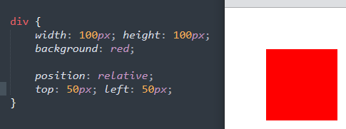

대해 상대적으로 오프셋을 적용함.
position 지정요소란, position속성에 속성값이 정의되어 있는 요소
Ex
position은 문서 상에 요소를 배치하는 방법을 정의.
position이 요소의 배치 방법을 결정하면,
top,bottom,right,left가 최정 위치를 결정하는 방식.
| 속성값 | 의미 |
|---|---|
| static | 기본값, 요소를 일반적인 문서 흐름에 따라 배치한다. |
| relative | 일반적인 문서 흐름에 따라 배치하되, 상하좌우 위치 값에 따라 오프셋을 적용한다. |
| absolute |
일반적인 문서 흐름에서 제거하고,
가장 가까운 position 지정 요소에 대해 상대적으로 오프셋을 적용한다. |
| fixed | 일반적인 문서 흐름에서 제거하고, 지정된 위치에 고정된다. |
| sticky |
일반적인 문서 흐름에서 제거하고,
스크롤 동작이 존재하는 가장 가까운 요소에 대해 오프셋을 적용한다. |
요소를 일반적인 문서 흐름에 따라 배치하되, 상하좌우 위치값에 따라 오프셋을 적용함.
오프셋(보충)이란, 위치를 얼마간 이동시키는 것을 의미
Ex

=원래 위치보다 위50px, 왼쪽50px 떨어짐
요소를 일반적인 문서 흐름에서 제거하고, 상위 요소중 가장 가까운 position지정 요소에
대해 상대적으로 오프셋을 적용함.
position 지정요소란, position속성에 속성값이 정의되어 있는 요소
Ex